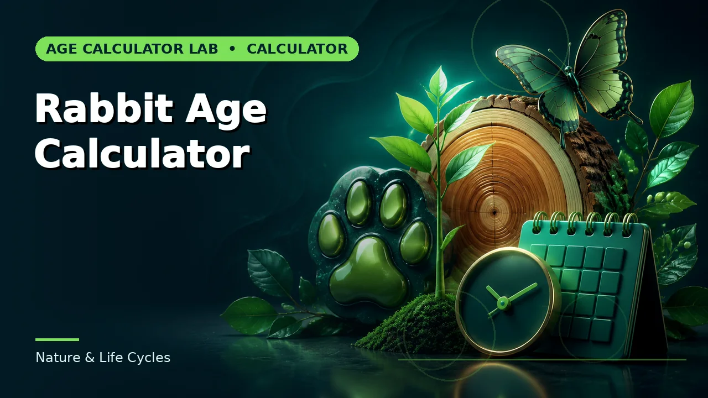

Quick answer
A one-year-old dog is closer to a teenager than to a seven-year-old. After maturity, larger breeds age faster, so size has to be part of the comparison.
Where the seven-to-one rule comes from
It appears to be a rough arithmetic convenience from a time when average human lifespan was around seventy and average dog lifespan around ten. It has no biological basis and it was probably always intended as a rule of thumb rather than a model.
Its main failure is at the start. A one-year-old dog is sexually mature, physically nearly full-grown and behaviourally adolescent. Calling that seven human years describes a child, which is not what is in front of you.
Use this guide with the right tool: Open the Dog Age Calculator for dog age expressed as an approximate human-age equivalent. If the question shifts, compare it with the Cat Age Calculator or the Rabbit Age Calculator.
The first two years
Development is dramatically front-loaded. Most comparisons place a one-year-old dog somewhere around fifteen human years and a two-year-old around twenty-four. That is roughly nine human-equivalent years for the second year, against fifteen for the first.
After that the rate settles into something much slower and roughly linear, which is where size begins to dominate.
Size is the main variable after maturity
Small breeds live substantially longer than large ones, which is unusual — across species, larger animals generally live longer. Within dogs the relationship inverts. A small terrier at ten may be comparable to a person in their late fifties; a giant breed at ten is often well into old age.
That is why any comparison worth using asks for adult size. A single formula applied to every dog will be badly wrong for at least one end of the range, and the difference at age ten can be twenty human-equivalent years.
What the comparison is for
It is a communication device — a way of translating a life stage into terms people intuitively understand, useful for thinking about exercise, diet, dental care and when to start monitoring for age-related conditions.
It is not a health assessment and it does not predict lifespan. Breed, genetics, weight, neutering status, dental health and veterinary care all affect an individual dog far more than any formula can capture. The vet knows your dog; the calculator knows one number.
Worked example
Numbers from a worked example are illustrative, not precedent. Run yours, keep the inputs beside the result, and confirm any rule that carries a consequence.
Common mistakes to avoid
- Multiplying by seven. It has no biological basis and is worst in the first two years, where it is most misleading.
- Ignoring adult size. Size is the dominant variable after maturity, and the difference at ten years is enormous.
- Reading the result as a health assessment. It translates a life stage. Individual health is a veterinary question.
Use the right calculator
These cover the calculations described above. Every page shows its method, so a result can be checked rather than taken on trust.



Frequently asked questions
Why do small dogs live longer?
The relationship inverts within the species, and the reasons are still debated — faster growth and higher rates of certain conditions in large breeds are among the leading explanations.
When is a dog considered senior?
Roughly seven for large breeds and ten or later for small ones, though vets increasingly assess this individually rather than by age alone.
Is there a better formula?
Research using DNA methylation has produced non-linear models that fit better than seven-to-one. Any of them remains a population average, not a statement about your dog.